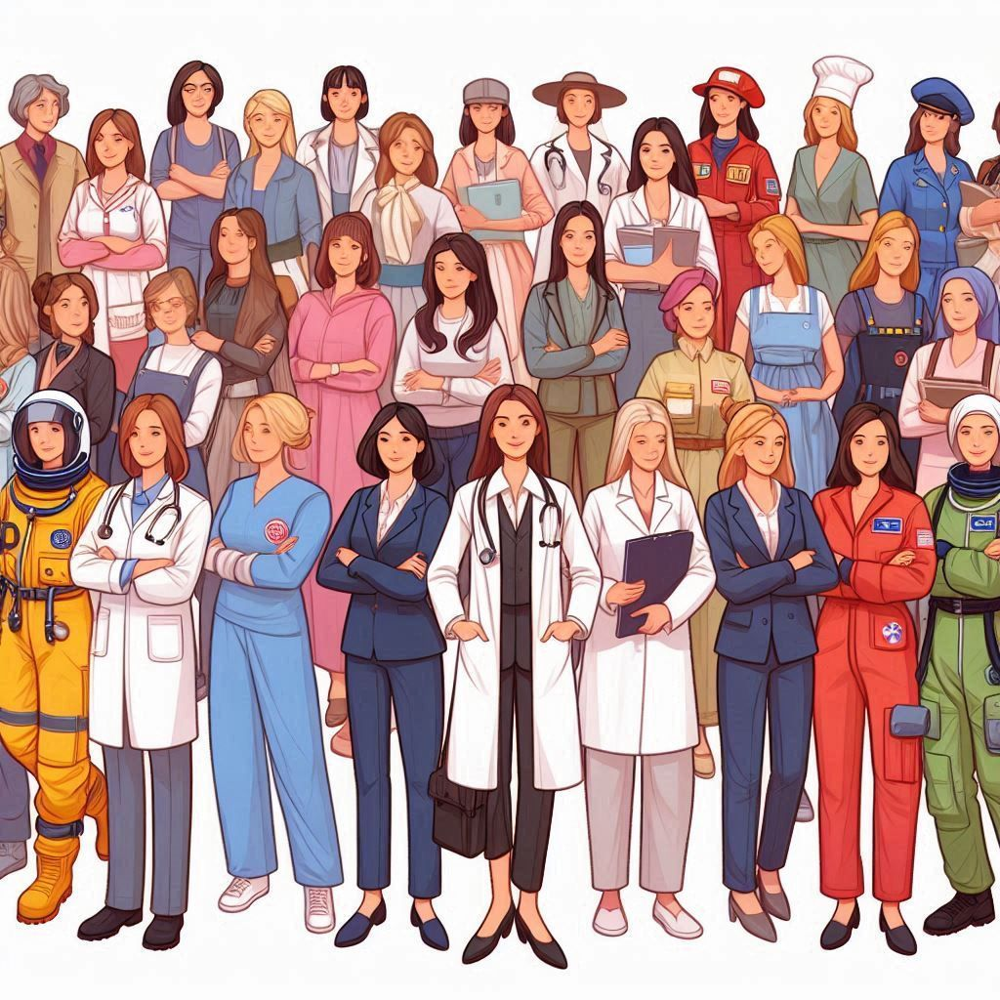
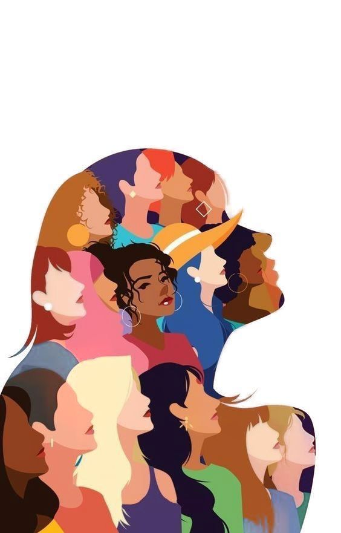
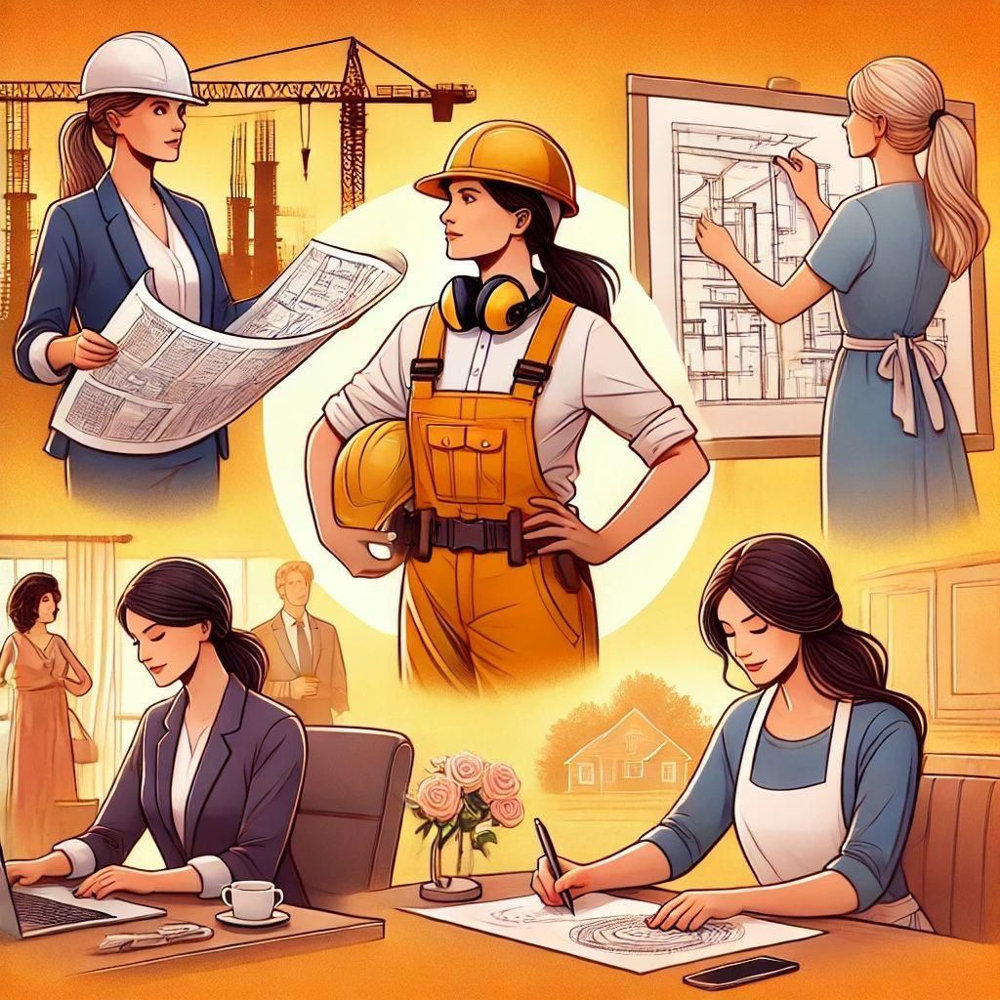

.png)
O Projeto
O projeto WoTech é uma iniciativa inovadora dedicada a promover a inclusão e o empoderamento das mulheres no campo da tecnologia. Com o objetivo de criar um ambiente acolhedor e inspirador, o WoTech oferece uma plataforma abrangente que conecta mulheres interessadas em tecnologia, fornecendo recursos educacionais, oportunidades de networking e um espaço para compartilhar histórias de sucesso. Através de workshops, mentorias e eventos, o WoTech busca quebrar barreiras de gênero e incentivar a participação ativa das mulheres em todas as áreas da tecnologia, desde programação até liderança. Ao destacar as conquistas e desafios enfrentados por mulheres na indústria tecnológica, o WoTech visa inspirar a próxima geração de líderes femininas, promovendo a diversidade e a igualdade de oportunidades no setor.

Histórias das mulheres (STEM)
Nesta seção, você encontrará relatos inspiradores de mulheres que desafiaram barreiras históricas e sociais para conquistar espaços fundamentais em ciência, tecnologia, engenharia e matemática (STEM). Mais do que registros de carreiras bem-sucedidas, estas são trajetórias que revelam coragem, determinação e uma paixão inabalável por transformar o mundo por meio da inovação e do conhecimento crítico.
Aqui, mergulhamos nas experiências de pioneiras e contemporâneas que, ao ocuparem laboratórios, canteiros de obras, linhas de código e centros de pesquisa, provaram que a inteligência e a criatividade não têm gênero. Cada história apresentada é um convite para refletir sobre o impacto profundo da representatividade: quando uma mulher alcança o topo, ela não apenas abre portas, mas redefine os limites do que é possível para todas as que virão depois.
Aqui, mergulhamos nas experiências de pioneiras e contemporâneas que, ao ocuparem laboratórios, canteiros de obras, linhas de código e centros de pesquisa, provaram que a inteligência e a criatividade não têm gênero. Cada história apresentada é um convite para refletir sobre o impacto profundo da representatividade: quando uma mulher alcança o topo, ela não apenas abre portas, mas redefine os limites do que é possível para todas as que virão depois.

Estatísticas de empregos das mulheres no campo da computação
As estatísticas de empregos das mulheres no campo da computação revelam uma realidade complexa e desafiadora. Embora tenha havido avanços significativos na inclusão de mulheres na indústria de tecnologia, ainda existe uma disparidade notável em relação à representação feminina. De acordo com dados recentes, as mulheres representam apenas cerca de 25% da força de trabalho em tecnologia, e essa porcentagem diminui ainda mais em áreas específicas, como desenvolvimento de software e engenharia. Além disso, as mulheres enfrentam desafios adicionais, como a falta de oportunidades de liderança e a persistência de estereótipos de gênero. No entanto, é importante destacar que iniciativas e programas estão sendo implementados para promover a diversidade e a inclusão, visando aumentar a participação das mulheres no campo da computação e criar um ambiente mais equitativo para todos os profissionais.
Mural de oportunidades
O mural de oportunidades é um espaço dedicado a conectar talentos femininos com oportunidades de carreira no campo da tecnologia. Este recurso visa promover a inclusão e a diversidade, destacando vagas de emprego, estágios, programas de mentoria e eventos voltados para mulheres interessadas em seguir uma carreira na área de tecnologia. O mural serve como uma plataforma para empresas e organizações que valorizam a diversidade de gênero, permitindo que elas compartilhem suas oportunidades de forma acessível e visível para um público amplo. Ao facilitar o acesso a essas oportunidades, o mural de oportunidades contribui para aumentar a representação feminina no setor tecnológico, incentivando mais mulheres a ingressar e prosperar nesse campo dinâmico e em constante evolução.
